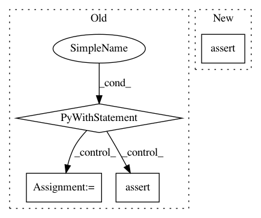

8da4857396fcedb1abd19a08cd4de40d16c7bc50,research/audioset/yamnet/yamnet_test.py,YAMNetTest,clip_test,#YAMNetTest#,39
Before Change
def clip_test(self, waveform, expected_class_name, top_n=10):
Run the model on the waveform, check that expected class is in top-n.
with YAMNetTest._yamnet_graph.as_default():
prediction = np.mean(YAMNetTest._yamnet.predict(
np.reshape(waveform, [1, -1]), steps=1)[0], axis=0)
top_n_class_names = YAMNetTest._yamnet_classes[
np.argsort(prediction)[-top_n:]]
self.assertIn(expected_class_name, top_n_class_names)
def testZeros(self):
self.clip_test(
waveform=np.zeros((1, int(3 * params.SAMPLE_RATE))),
expected_class_name="Silence")
After Change
top_n_scores = clip_predictions[top_n_indices]
top_n_class_names = YAMNetTest._yamnet_classes[top_n_indices]
top_n_predictions = list(zip(top_n_class_names, top_n_scores))
self.assertIn(expected_class_name, top_n_class_names,
"Did not find expected class {} in top {} predictions: {}".format(
expected_class_name, top_n, top_n_predictions))
def testZeros(self):
self.clip_test(
waveform=np.zeros((int(3 * YAMNetTest._params.sample_rate),)),
In pattern: SUPERPATTERN
Frequency: 3
Non-data size: 4
Instances
Project Name: tensorflow/models
Commit Name: 8da4857396fcedb1abd19a08cd4de40d16c7bc50
Time: 2020-08-17
Author: 30733558+plakal@users.noreply.github.com
File Name: research/audioset/yamnet/yamnet_test.py
Class Name: YAMNetTest
Method Name: clip_test
Project Name: ChrisCummins/clgen
Commit Name: 9f373e4b9aba5f1023a5a5a5366268622ff07af1
Time: 2020-01-08
Author: chrisc.101@gmail.com
File Name: deeplearning/clgen/docker/clgen_preprocess_test.py
Class Name:
Method Name: test_cxx_preprocess
Project Name: pantsbuild/pants
Commit Name: f7b260e965e277d62d2f54847671d06b1763fb21
Time: 2020-08-23
Author: 14852634+Eric-Arellano@users.noreply.github.com
File Name: src/python/pants/backend/python/rules/coverage_integration_test.py
Class Name: CoverageIntegrationTest
Method Name: test_coverage_raw